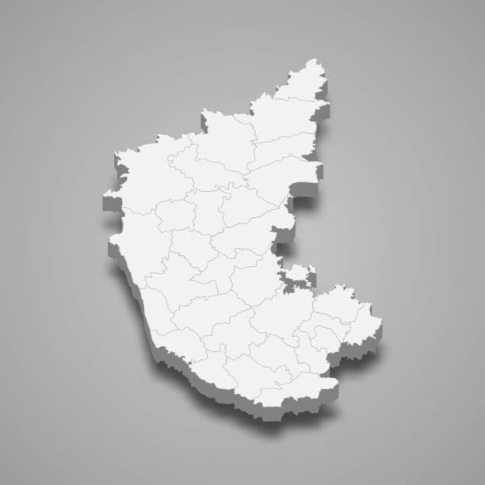

Karnataka

- Capital: Bengaluru (Bangalore).
- Official Language: Kannada.
- History: Over 2,000 years, ruled by indigenous dynasties like Kadambas and Hoysalas, previously known as the State of Mysore.
- Geography: Western edge of the Deccan Plateau, featuring the Western Ghats, a long coastline, and eastern plains, bordered by Maharashtra, Goa, Kerala, Tamil Nadu, and Andhra Pradesh.
- Technology: A major global IT and innovation hub.
Culture & History: Majestic temples (Hampi, Belur, Halebidu), historic monuments, and traditional attire like the Mysore Peta.
- Natural Beauty: Lush greenery, waterfalls, and the biodiversity of the Western Ghats.